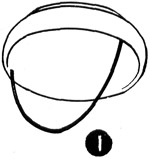
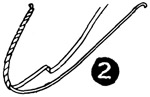
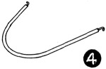
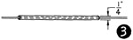
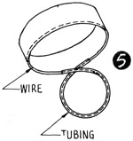
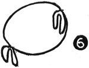

1952—How to Make Hats
by Ruby Carnahan
Hat Anchorage
DESCRIPTION
Non-headsize hats and other small hats require an anchorage to keep hat on head.
ELASTIC ANCHORAGE (ILLUS. 1)
Use a piece of thin rolled silk elastic. Measure elastic from side to side of hat stretching slightly. Sew at each side of headsize. Finish headsize with a swirled ribbon headband.
WOUND WIRE (ILLUS. 2)
Cut a wire 17" long, turn a loop in each end of wire and sew to each side of headsize. Use 1/2" wide ribbon or strips of felt and sew one end to wire at headsize. Wind around wire tight to other side of headsize and sew to opposite wire. Finish head-size with a swirled ribbon headband.
WIRE IN TUBING
(Illus. 3) Make a 1/4" tubing of felt or ribbon and run wire through tubing and sew to either side of headsize. (Illus. 4) Cut material 1/2" wide, fold in half and stitch together for tubing.
WIRE LOOP
For a loop anchorage, make a half yard of 1/4" tubing of matching material. Slip wire into tubing and turn wire at end of tubing, making a 14" loop, join ends of wire with a wire joiner. (Illus. 5) Fit balance of wire around inside of headsize and sew.
SHIRRED RIBBON WITH ELASTIC
Measure two pieces of 1/2" ribbon, one and a half lengths of elastic piece being used. Stitch ribbon together on each side and run elastic through center of ribbon and sew on either side of headsize.
SIDE CLAMP ANCHORAGE
Run a wire through 1 1/8 yds. of velvet tubing (or wind with No. 3 grosgrain ribbon). Join wire with a wire joiner. Lap tubing ends and sew together. Measure 4" from this joining and bend wire into a 7" loop and sew together. Measure 12 1/2" and make another 7" loop and sew together. Bend these loops, or tabs, to fit head, as shown in (Illus.6). Sew tubing around head size of hat. These tabs are a new form of decoration besides serving their purpose of holding hat in place. The tabs may be trimmed with flowers or bows.
VELVET ROLL
Measure paper rope to fit headsize. Cut and sew together. Do not lap ends of paper rope. Cut a bias strip of material the length and width of the rope, allowing extra width for stretching and turning seam. Stretch material around rope and pin. Lap ends of material and sew. Turn edge of material under and slip stitch. Sew covered rope around head size. Paper rope comes in several thicknesses.